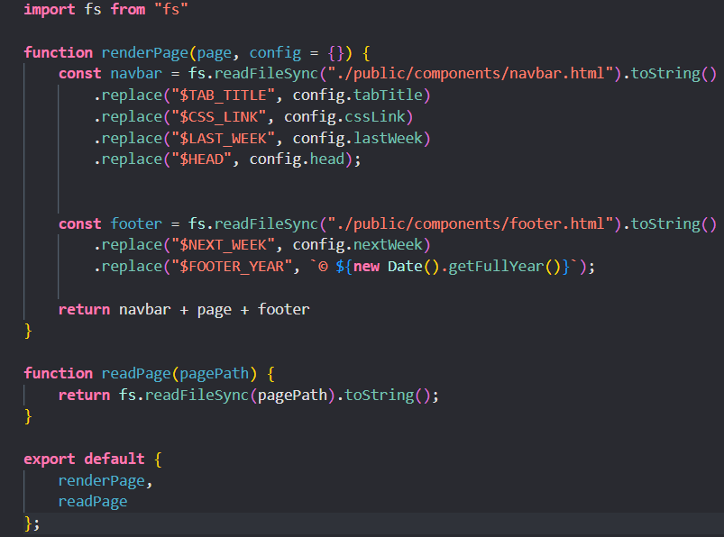
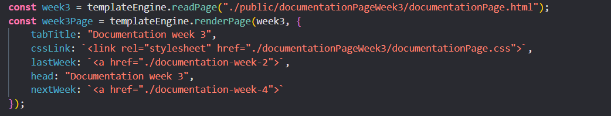
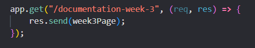

Server-Side Rendering and Client-Side Rendering are two approaches for rendering web pages.
Time: SSR can provide faster initial load times because the server sends a fully formed HTML response to the client,
which reduces the amount of time required for the browser to render the page.
Resources spent: SSR can require more resources on the server side because it needs to render each page request.
However, once the page is rendered, the client-side JavaScript can take over and provide interactivity without additional server requests.
SEO: SSR can improve SEO because search engine crawlers can easily crawl and index the fully formed HTML response.
The renderPage function takes in two arguments: page and config. Page is a string containing the HTML content to be rendered on the page. The config object contains variables that will be replaced in the navbar and footer components. The function replaces any instances of the variables in the navbar and footer components with their corresponding values from the config object. Finally, the function returns the concatenated string of navbar, page, and footer.
The readPage function takes a single argument, pagePath, which is the file path of the HTML page to be read. The function uses fs module's readFileSync function to read the file synchronously and then converts it to a string. The function then returns the string containing the contents of the HTML page.
Then we use the readPage function to read the content of the HTML file and store it into a variable. After that we render the HTML page by calling the renderPage function with the variable where we stored the readPage and an object as a second argument.The object contains properties that will be used to replace the corresponding placeholders in the navbar and footer components.
At the end we sent the page to the client.

Time: CSR can provide faster subsequent page loads because the client-side JavaScript can take over and render subsequent
pages without additional server requests.
Resources spent: CSR can require more resources on the client side because the client needs to download and execute the
JavaScript code required to render the page.
SEO: CSR can potentially harm SEO because search engine crawlers may not be able to crawl and index the content
rendered by client-side JavaScript.
The code of an application can affect its memory usage in various ways like:
a) Data Structures - The way data is stored and accessed by an application can have a big impact on its memory usage.
b) Memory Allocation - The way memory is allocated and deallocated by an application can also have an impact on its
memory usage. For example, if an application frequently allocates and deallocates memory for small objects, it can
lead to memory fragmentation and increased memory usage.
c) Recursion - Recursive algorithms can cause an application to consume a large amount of memory if they are not implemented
carefully. Each recursive call adds a new stack frame to the call stack, which can quickly consume memory if the recursion
depth is high.
d) Garbage Collection: The way an application handles garbage collection can also impact its memory usage. If an application
does not release memory promptly, it can lead to increased memory usage and potentially cause performance issues.